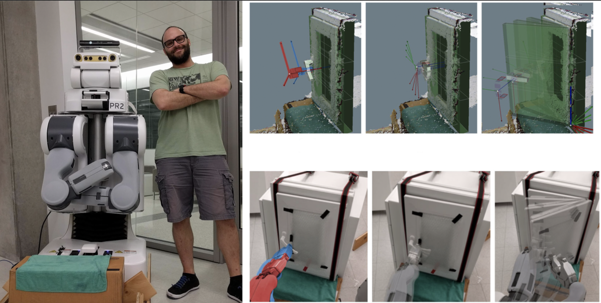
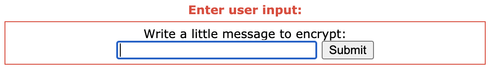
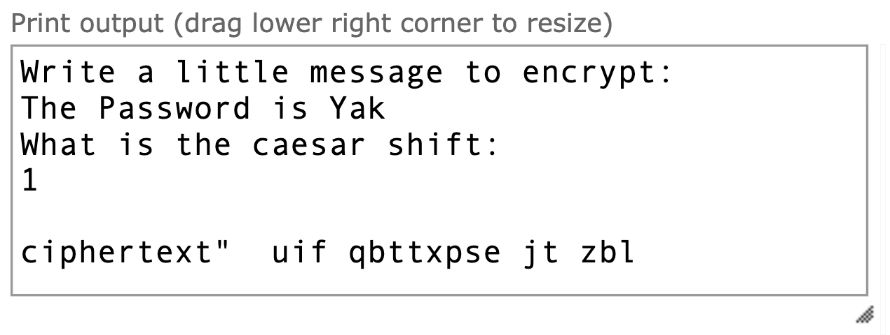
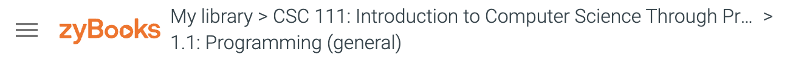
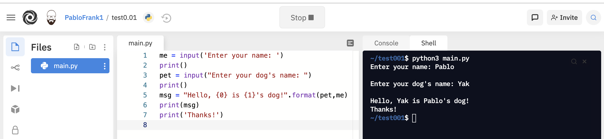
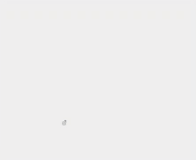

Lecture Notes 01: Welcome to CSC 111
Before Starting:
Who's who and why are we here?
Pablo
Name: Pablo Frank Bolton ("Frank" and "Bolton" are last names);
Pronouns: He, Him;
you can call me "Pablo"
What do I do?
- Human-Computer-Interaction

- Biology-CS collaborations

- Teaching and STEM research

My Dog Yak
this is my dog, Yak:
(Informal Dog-Walk Hours can be used for petting Yak, chatting with me, or even to talk shop)
Instructional Team
Names: TBD
The Students
Please fill out this small 3-minute-biography so I can get to know you a bit.
The Class
Activity 1 :[2 minutes] : Can anyone tell me what Computer Science is?
One possible answer:
(Wait until we have a couple definitions; then Click to expand and see mine.)
Computer Science is the structured study of, and the design of solutions for, problems that are solvable with an algorithm.
And what is an algorithm?
One possible answer:
(Wait; then Click)
A series of steps that allow you to solve a problem.
(there is a bit more than that, but for now, that's enough)
-
Computer Science is not simply a collection of data to be memorized.
-
CS is a way to approach the analysis of a problem and the design of a solution for it.
-
The fact that it has "computer" in the name is an indication of the way we think of and design solutions for these problems.
-
A computer requires structure and organization to be able to function and so, CS is the discipline that teaches one to think in a structured and organized manner of ways to analyze and solve problems.
However, we can do CS without computers as long as we think the right way.
"Computer Science is no more about computers than astronomy is about telescopes"
Dijkstra was a Dutch Computer Scientist that was good (The Serena Williams of CS).
-
You will see many similarities with engineering, mathematics, and physics because 1) CS is the descendant those fields, and 2) it inherits the scientific method.
Activity 2 :[2 minutes] : Can anyone tell me what programming is and why you think it is useful?
One possible answer:
(Wait; then Click)
Programming is the translation of an algorithm into structured and unambiguous steps that are readable by some agent.
This class has three main objectives:
- Learn the Language: learning the Syntax (spelling rules) and struture of a programming language (Python) as well as the basics of how it is executed by the computer;
- Computational Thinking: learning how to understand, analyze, and solve problems "through" the computer (Python);
- Applied Programming: connect what you learn in this class to other fields like art, gaming, literature, walking your dog, etc).
A Most Important Point: This course is designed so that anyone can learn to program and do well even without any prior experience!
An example of things we'll do
Caesar Cipher
Follow these steps:
-
Open this link in another window: Python Application: Caesar Encryption
-
press the Visualize Execution
-
Write a message in the little box and press Submit:

-
You can press Next to see the execution of the code step-by-step
OR
press Last in order to get to the end!
-
Look at the encoded message that is "printed":

Remaining checklist for today:
- Course Information
- Locate the course page on Moodle
- Locate Discord info on Moodle and Sign up to Discord.
- Locate ZyBooks info on Moodle and Sign up to ZyBooks.
- Locate Repl.it info on Moodle and Sign up to Repl.it
- Meeting and Accommodations
Course Information
The class information is located in the Class Info link of the navigation bar. We will go over it now. When we are done checking it out, make sure to continue here.
Using Discord
We will use Discord as our main communication hub.
-
Please sign up for Discord:

-
Join the smith-f21-csc111-03 server.
OR use this invitation link: https://discord.gg/853gjmDb
-
You can read this tutorial to get an idea of how to use it.
Using Moodle
Access Moodle here: https://moodle.smith.edu/
We'll keep links to each lecture in Moodle. In addition, we'll have any PDFs, readings, and other resources.
I'll update the course Moodle with the appropriate links and information as we move forward in the course.
Using ZyBooks
ZyBooks are interactive digital books with exercises and labs that allow students to:
- Read basic introductions to concepts
- complete introductory and practice exercises
- complete lab-style exercises
How to get to ZyBooks
We have linked ZyBooks directly from Moodle.
We will place assignment and lab links in the Moodle topic for each lecture.
It is important to know that you
should go into ZyBooks from Moodle and not directly. This will allow Moodle to keep track of your completed assignments and the points gained.
It costs $77 and it will count as your digital course book.
TODO before next class (and so you can complete the first assignment):
- Go to Moodle: Topic 1: Introduction and Setup
- Click on the "ZyBook assignment01" link;
- This will either:
- open a dialogue so you can regiter for the book (it should be the book for our section: SMITHCSC111FrankBoltonFall2021); OR
- (once registered) open the course ZyBook at the assignment's starting chapter (embedded in Moodle)
-
At the top of the embedded ZyBook window, you'll see the following:

- If you press the link for "CSC 111: Introduction to Computer Science Through Programming home", it will take you to the book index and main dashboard.
- You can see the table of contents, and if you scroll to the right, you'll see a series of submenus including the Assignmments
Note: you might have to open your browser window to full screen to see the right-side menu
- On the "Welcome" Submenu, yoou can click on the "View Instructions" link and verify this is tthe book: "SMITHCSC111FrankBoltonFall2021"
Types of ZyBook assignments:
-
Prep Activities: You will complete relatively small readings and exercises before most lectures.
This will allow you to gain a "bird's-eye view" of the subject that will be discussed in the upcoming lecture.
Completing these activities will help you feel "on top" of the subject matter.
-
ZyLabs: These exercises might be completed during lecture or as a homework assignment. They require deeper understanding of the subject matter and often help detect misconceptions and clarify the way to apply ideas seen in class to solve practical problems.
Using Repl.it
Repl.it (AKA replit) is a free, collaborative, in-browser IDE. An IDE is an Integrated Development Environment, which is a fancy way of saying "a text editor that can also check and run your code".

The important part is that we'll be able to exchange files and check your work through replit, making it easier to check your code for errors, grade your work, and distribute templates to get you started.
To join:
- You are going to use your smith email
- If asked, add the name you used to register for the class
- Click the following link to Join the Team CSC-111 Fall-21 (sec-03)
To see how it works: let's open the example: Caesar Encryption 01
Meeting and Accommodations
I would be very happy to meet you during office hours.
This will help me get to know you and learn how best to communicate.
Office Hours are not for remedial or emergency meetings, its part of the academic experience!
In OHs, we can talk about the class work and organization, but also about aspirations, expectations, curiosities, and more.
I really like office hours, so please feel free to drop by.
You may take this opportunity to let me know if you have arranged any accommodations with ODS.
Before next class (Wednesday)
[Due for everyone] Complete ZyBook Assignment 01 (chapters 1.1 - 1.3, and 1.16) (See how to register and access it above)
[Optional] Try to make the following shape using the "turtle graphics" activity 1.1.15:
